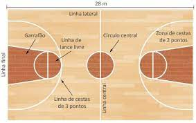
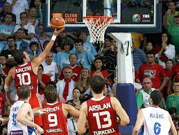

O objetivo das duas equipes, de cinco integrantes cada, é colocar a bola dentro da cesta adversária. A partida é disputada em quatro quartos de dez minutos cada, e o ganhador será o conjunto que marcar mais pontos ao fim do período.
existe cesta de 3 pontos, que é fora da área de arremesso de 3
E existe cesta 2 pontos que são enterradas o bandeja
